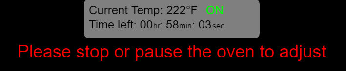
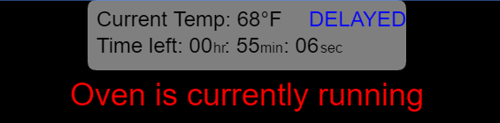
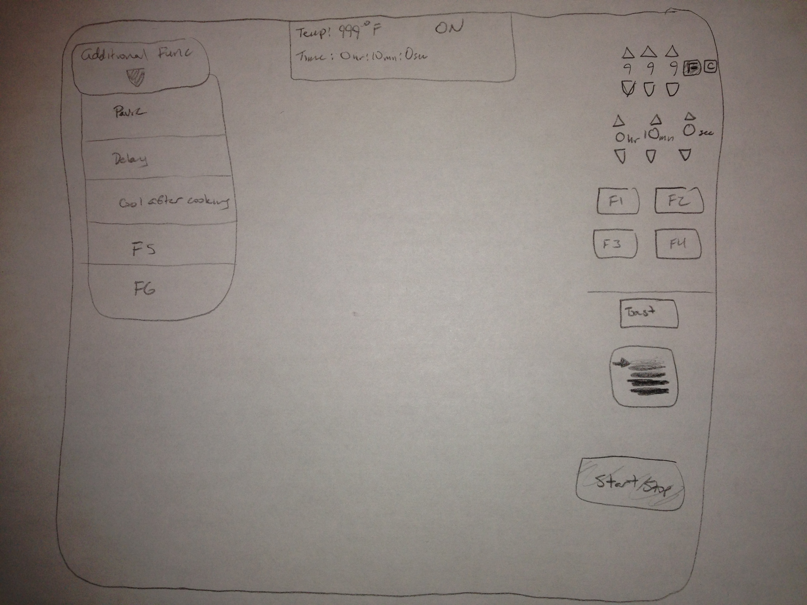

Patrick Tam - CS422 Project - Toaster Oven
Contents
Toaster Oven Application
Link is https://patricktam.github.io/CS422_Project1/
Github Repo
Link is https://github.com/PatrickTam/CS422_Project1
Video Link
Link is https://www.youtube.com/watch?v=7MczCRDRcOA
How to use the application
The overall application...
The Essentials
This section describes the essential functions of the toaster oven, in other words, what is required to make the toaster oven work.
This is the temperature and time controls. These only work with the Bake, Broil, Pizza, and Convection Bake options (because Toast and Bagel run on a different setting, seen later).
The temperature setting is on the top, shown by a thermometer, and you are able to set the hundreds, tens, and single digits on it using the arrows. The arrows are on each digit because it is much quicker to set temperature through this than having to press an arrow 100 times to get 100 degrees, you only have to press it once.
You are also able to change the values between Farenheit and Celsius seen on the right of it, the option which is being used is shown as red. Switching between will convert the value to the other.
Under the temperature setting is the timer setting, you are able to set the time by the hours, minutes, and seconds. This is used because it is simpler to set what times you need by separating them into sections and it is more accurate than a dial. The hours can go up to 24 and the rest to 59, so the worst case is that you have to press the button 30 times (if a hold-down option were available it would be even quicker).
You can also press down arrow from 0 to get to the max value to get to the larger numbers quicker.
Below the timer setting is where the functions begin. The functions are Bake, Broil, Pizza, and Convection Bake. Selecting one of these will turn it red and change the setting in the toaster oven.
Toast/Bagel function is under the functions under a line. This line is to represent that this is separate from the options up on top, since the time and temperature are set when toasting and it depends how dark the user wants to toast in the setting under the function button.
The user is not able to set how dark they want their toast until they have clicked on the Toast/Bagel function. If they do, they are given a message in the top center of the screen.
Additional Functions

The additional functions are hidden under the toggle "Addtional Features" because they are not required for the toaster oven to run, the options already described are the only things required for the toaster oven to run.
When toggled on, the additional functions come up. If some options are set and the "Additional Features" button is clicked again, it would still save those settings.
- Pause - This is for pausing the toaster oven ONLY while it is running (you wont be allowed to click it otherwise). This sets the temperature of the machine back to room and the time is frozen. This is useful for if a person needs to do something to the food, or if they need to step out really quick and want to play it safe.
This is different from stopping because it does not set the timer and temperature back down to default values.
- Delay - When clicked, the user is given the ability to set the delay time in minutes. Next to the delay button is the toggling ON (green)/OFF (red) button. When toggled on and with a delay greather than 0, the user is able to delay the start of making the food, or delay while making the food, as you are able to set a delay while the toaster oven is running and toggle it on.
This is useful because it lets the user be able to decide when they actually want to start cooking while not having to be there. When delay is toggled on and the oven is running, it is shown near the center when it will start running
Lock Code - This is a safety feature for the toaster oven. When clicked, the user is given a prompt 
If the code is set, the user is required to input that code before starting the toaster oven: .
If incorrect, it will deny the user to start it:
This is to prevent anyone from starting the toaster oven, so if a child or something hits the "Start" button on the machine, it would prevent it from running when not intended.
- Early Alarm - When running, the user is able to toggle an early alarm in intervals from 0, 5, 10, 15, 20, 25 minutes before the food is done cooking. This is for the user to set to make sure they can set up before the dish is done cooking.
Clean Oven - Modern ovens of today have self-cleaning where they heat up to extremely high temperatures to burn up any residue into ash, for the user to wipe up later http://www.geappliances.com/ge/range-stove/range-cleaning-options.htm
The oven prompts the user when they click on it, warning that it will take 5 minutes to complete.
- Cool After Cooking - This function cools the food after it is done cooking, where it lowers the temperature of the oven and lets it sit for 3 minutes only after cooking. This is so that people can cool the food before picking it up out of the oven to not burn themselves, or cool it before eating.
Start Button
To clarify a bit too, whenever there is a "warning" (i.e. red text that appears), a warning sound comes with it as well.
The start button is toggled on and off. When the oven is running, the start button will turn green. When it is clicked while running, the oven will turn off, setting the oven back to default values (room temp and time to 0).
 
While the oven is running, the user cannot click on some buttons around until they have either stopped or paused the oven. The buttons consist of anything on the right side (the essentials) and setting the Delay time. The "Set Lock Code" and "Clean Oven" options are also not available while the oven is running, even when paused.
Pause and Delay toggle button, however, are able to be used at any time while the oven is running. The oven is also able to be stopped at any time.
There is also a soft requirement of the user having to set a time that is not all 0s to start the machine.
Current Information

The description contains 3 main components:
- Temperature - keeps track of the temperature. If toggled on the right side from F to C, it will change on this as well.
- Time - how much time is left, separated in HR:MIN:SEC
- Status - There are 5 statuses: PAUSED (orange), DELAYED (blue), COOLING (sky blue), OFF (red), and ON (green).
This is on the top center of the screen because that would usually be the first place in which the user looks for this kind of information. This contains all the information that the user needs to know about the status of the cooking when it starts.
When off, it is at its default value of room temperature and 0 time.
If paused, the user can change information on "the essentials" part of the machine. When unpaused, if and only if the information changed on "the essentials", the information at the top will change with it. This makes sure that if the user wanted to change anything, the machine will reflect it.
Why this is a good interface
I feel this is a good interface because it makes good use of colors. In the "Current Information" section, there are different colors per status. This is so that the user can know what the toaster oven is doing without having to really analyze what it is doing.
Also, the interface separates the required parts of the toaster oven from the additional features. The additional features are hidden to reduce the amount of button clutter as well. If the user is looking for the additional features, they will find it on the other side.
The essential side of the machine is on the right because that is how classically microwaves and toaster ovens work. On the essential side of the machine, it starts with temperature, then goes to time, then to function. This is how it logically flows downwards for cooking. On the functions, I separated the Toast/Bagel from the rest because the toasting has a totally separate way of cooking (which disregards time and temp, and goes for its own values).
The start button is then at the center of the bottom of the screen because that is where the user will flow to while using the machine, going downwards/
The non-essentials are one the right side, and they are separated by spaces in between. Pause and delay are closer to eachother because they are in spirit almost the same.
As for the warning/error messages, they appear right under the "Current Information" area because it is where the user will likely look if someting is wrong, and it is red to show that it is a warning.
When the user has to input a code or set the delay, the prompt comes to the middle of the screen as it is only temporary.
When an option is selected, either a photo changes or its text changes to another color. This is to keep from having too much color that hurts the eyes (i.e. changing the button color), and not knowing if something has changed (keeping the text black).
The arrows throughout the project are also slightly separated, which separates the numbers a tiny bit. But this is all to avoid clutter and making it look nicer.
Sketch

My sketch is essentially same as my project, except a bit of subtle changes.
On the right side, I planned for there to be a drop down window like a taskbar on a regular word document, but I decided to use buttons because a drop down does not make sense to have changing colors or photos next to them.
I also had the start button on the right side like a regular toaster oven, but I decided to put it in the center because if the user is looking at both sides, I would rather put it in a neutral location rather than favoring one side over another.
Also, as you can see, I didn't have all my ideas for additional functions when I made this.
Sources
- Beep sound - http://www.freesound.org/people/dland/sounds/320181/
- Alarm sound - http://www.freesound.org/people/kwahmah_02/sounds/250629/
- Toaster ding - http://www.freesound.org/people/sethlind/sounds/265012
- Error sound - http://www.freesound.org/people/Autistic%20Lucario/sounds/142608/
- Time image - http://vergilis.co/wp-content/uploads/2017/01/digital-clock-clipart-black_5874029b9d330.png
- Temperature image - http://images.clipartpanda.com/weather-thermometer-clip-art-9cRXkggce.png
- Lock image - https://www.anvur.it/AnvurUniversity/images/lock.png
- Unlock image - http://cdndata.co/cdn/8cfa6685db2f733d211e57e91c6f955a84b671dd/PadLockOpened.png
- Cool wind image - http://images.clipartpanda.com/wind-clip-art-Kine4KjrT.png